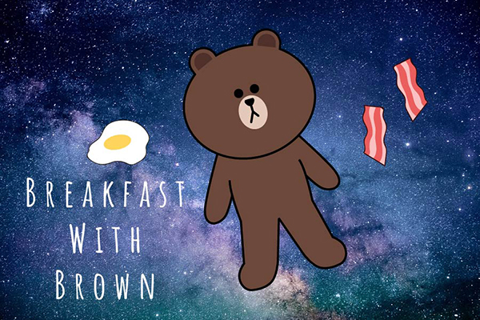

Home | Photoshop | Illustrator | Animate | Indesign | Contact |
Illustrator: Breakfast with Brown
I really love Brown, a character from Line Friends. This is why I decided to make him the main character of my Illustrator Final. I wanted to stick with the space theme so I put him in space with bacon and eggs. I had a lot of fun and was happy with the end result although creating Brown was a little difficult.